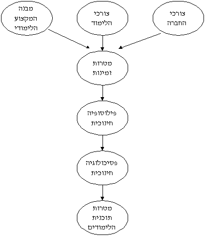
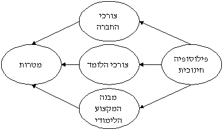
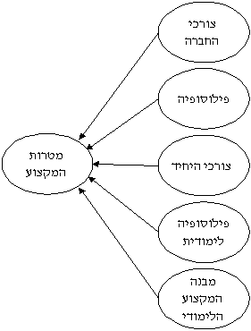
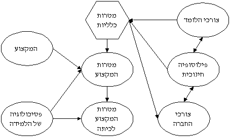
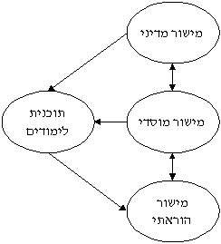

.המודלים הבאים מיועדחם להעשרה למעוניינים בכך
לפניכן מודל המעמיד את הפילוסופיה החינוכית במקום ראשון בעיצוב מטרות החינוך. תומכים
בגישה זו סוברים כי המקור לתפיסותינו החינוכיות הוא מטען הערכים שאנו נושאים. לדעתם אין
אפשרות לפעולה מןשכלת ללא שימוש בערכים (והרי בניית תכנית לימודים הינה דוגמא מובהקת
.לפעילות מושכלת). פרופ' סימון וגודלד הם שניים מהחוקרים הידועים יותר הדוגלים בגישה זו

.בא להגן על המודל של טיילר, תוך תיקון מקומה של הפילוסופיה החינוכית בו
המודל של אדן
.כמו כן מודל זה עונה למסתייגים מהלינאריות והתפיסה החכ כיווניות הקיימת במודל של טיילר
.נוסח מתוקן זה מתייחס לתכנון תכנית לימודים למקצוע אחר

המודל של אדן <b><u>לתכנון תכנית לימודים רב מקצועית, משלב את המודל של טיילר, תוך הצגת
.השפעות הגומלין הנוצרות במהלך התכנון

,מובן שתכנית לימודים אינה בנויה רק מהשיקולים המוכתבים על ידי מתכנניה. על פי גלדל
ההחלטות הקוריקולריות (ישום תכנית הלימודים בכיתה) תלויות בהחלטות פוליטיות שחלקן
ממשרד החינוך אל המורים בשדה, וחלקן נקבעות בשדה, במישור
- "באות "מלמעלה למטה
.(המוסדי (בית הספר, השכבה), ובמישור ההוראתי (על ידי כל מורה בכיתתו
להיבטים נוספים בתכנון קוריקולרי נתייחס בנושאי הלימוד: "מבנה הדעת של המקצועות" ו"מי
."את/ה המורה

Sari Bar-On 1999 - All rights reserved